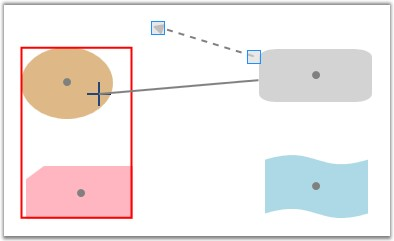
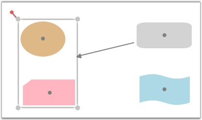
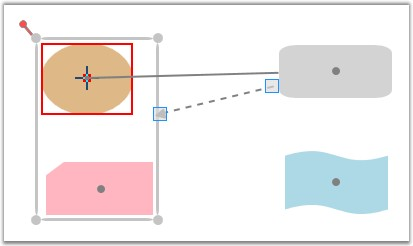
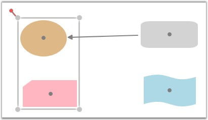

Grouping enables to connect to groups as well as to individual objects in a group. This section illustrates how to create connections to a group and its child objects.
Creating Connections to a Group
The following steps illustrate how to create connections to a group.
1. Press the left mouse button while the mouse pointer is over any of the child objects of the group.
2. While the left mouse button is pressed, drag one end of the line connector to any of the group's children.
This will display a red adorner along the group's boundary, indicating that the connection is to be made to that particular group.

Figure 110: Creating Connection to a Group
3. Release the mouse button at that point to connect to the group's boundary.

Figure 111: Connection Created to the Group
Creating Connections to a Objects in a Group
The following steps illustrate how to create connections to individual objects in a group.
1. Press the left mouse button while the mouse pointer is over the node to which the connection is to be made.
2. While the left mouse button is pressed, drag the line connector to the center port of that particular node.
When the mouse pointer is over the center port, a red adorner will be displayed along the node's boundary, indicating that the connection is to be made to that particular node.

Figure 112: Creating Connection to a Child Object
3. Release the mouse button at that point to connect to the node's boundary.

Figure 113: Connection Created to the Child Object
 Note: Connections cannot be created between a
group and its own children. However child objects belonging to the same group
can be connected to each other.
Note: Connections cannot be created between a
group and its own children. However child objects belonging to the same group
can be connected to each other.
See Also
Create Line Connectors Refer Concepts and Features -> Line Connector -> Create Line Connector